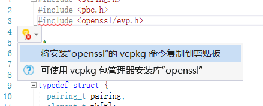

PBC 学习使用笔记
一些关于PBC（paring based crptography）库学习使用的笔记，以方便日后查阅。
引言
PBC库是一位斯坦福大学的密码学家Ben Lynn所开发维护的一个C语言库。该库需要使用GMP支持。
PBC的配置和安装
要使用PBC，首先需要配置好PBC。
目前唯一调通的教程。 https://blog.csdn.net/u013699902/article/details/58319928
Openssl配置安装
PLAN A
在使用VS的时候发现没有openssl库，Visual studio自动给了提示如下。

vcpkg是一个包管理工具。于是根据详细的教程下载安装成功。但是接下来使用该工具下载库时却因为从Github上下载极其不稳定屡次失败。
于是按照教程，先使用浏览器下载。https://github.com/Kitware/CMake/releases/download/v3.14.0/cmake-3.14.0-win32-x86.zip下载成功后将其放到vcpkg的安装目录的downloads文件夹下，重新下载新的库。
PLAN B
因为PLAN A 太慢了，又找到了其他安装 OPENSSL 的方法。参考下面的网站，第一个为教程，第二个为下载地址。
总结在VS下调用PBC与openssl的项目配置方法
- 首先将教程中的https://blog.csdn.net/u013699902/article/details/58319928下载完全。将内部内容直接装入项目文件夹会方便一些，如果项目本身不太复杂。
- 安装好openssl（32位）。
- 新建vs项目，笔者使用的是VS2019环境。
- 点击标题菜单“项目”-“属性”。在弹出窗口的左上角的“配置”下拉菜单中选择“所有配置”以防debug和release版本不一。注意教程中使用的编译好的PBC只有32位版本故只能编写32位程序！
- 选择“VC++目录”项，选中右侧的“包含目录”的下拉按钮，点击编辑。将openssl的安装目录下的
include文件夹和下载下来的PBC的include文件夹加入。 - 同样的方法，将openssl安装文件夹的
lib文件夹和下载下来的pbc.lib所在文件夹加入“库目录”。 - 在左侧选择“连接器”-“输入”，在右侧的附加依赖项中加入
libssl.lib、libcrypto.lib和pbc.lib。 - 将OpenSSL安装目录下bin文件夹中的“libcrypto-1_1.dll”和“libssl-1_1.dll”（名字后面的版本号可能因更新而不同）复制到项目目录下。
- 将PBC下载文件夹中的pbc.dll复制到项目目录下。
- 大功告成！
经验之谈
其实很多时候不需要去mingw这样的平台尝试去用windows仿真linux，既然在Windows编程，就去使用VS就可以。Visual Studio已经是如今行业规范，所以很多库都会为方便Visual Studio有各种各样的便捷通路。之后在Windows上从事这类开发，可以直接搜索如何将相关库整合至VS上即可。可以省去很多无用之功，少走一些弯路。
施工中 以下为未整理信息
首先下载源代码
安装mingw
使用msys
切换到对应文件夹
$ ./configure -disable-static -enable-shared
make
make install
先安装gmp 在安装pbc 然后openssl
安装结束后在C:\MinGW\msys\1.0\local 中将对应文件拷贝至 C:\MinGW 对应文件夹中
openssl：bin/openssl.exe include/openssl/ lib/openssl/
Linux: flex openssl gcc make libssl-dev libgmp-dev bison